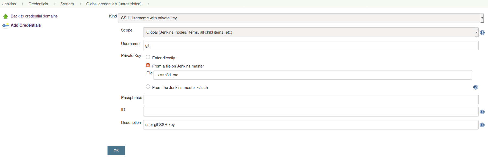
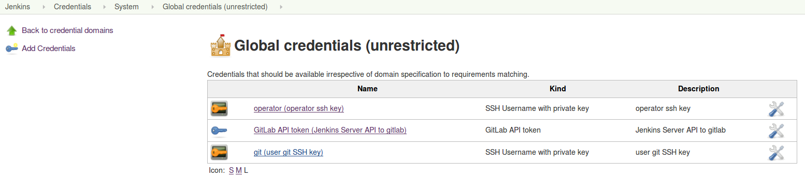
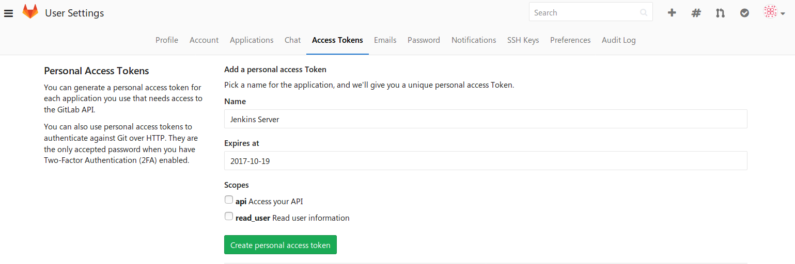
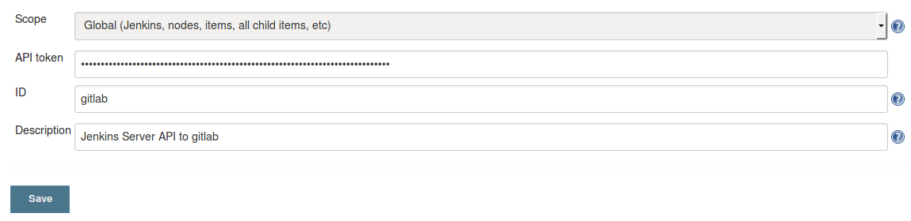
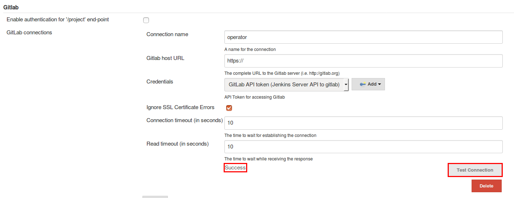
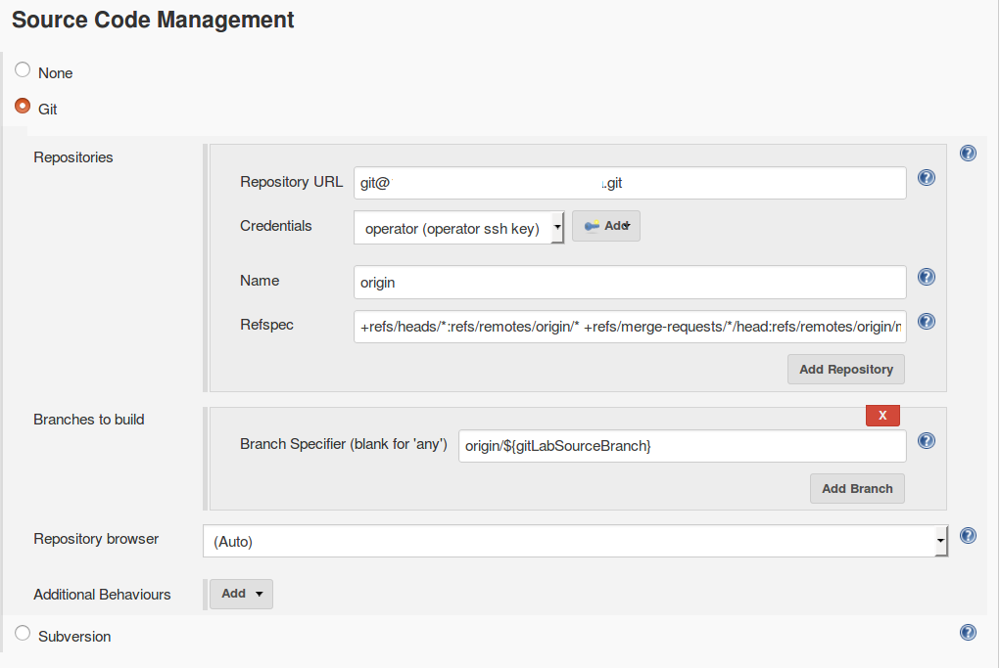
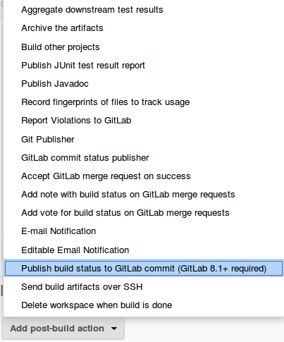
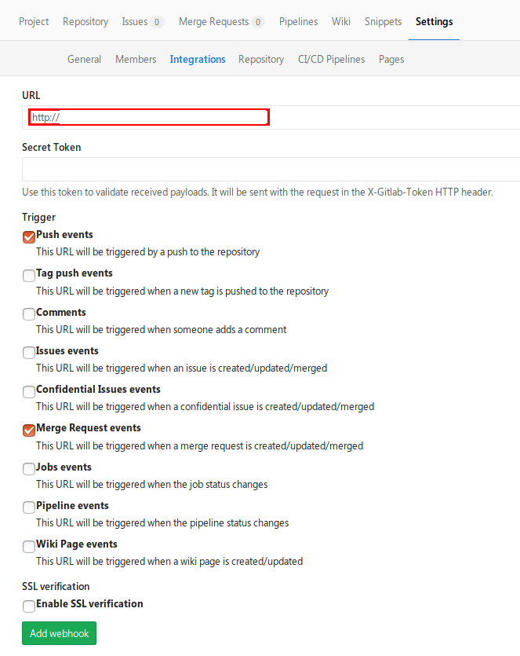
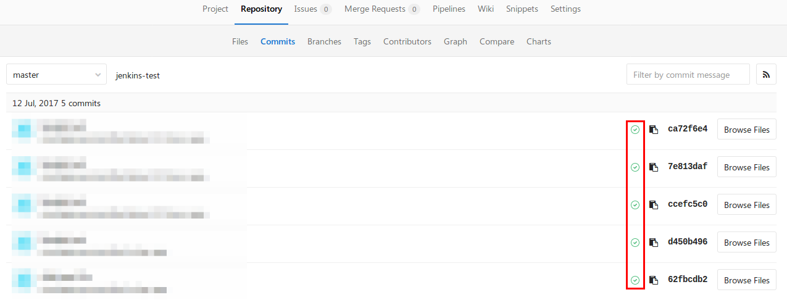

Jenkins是一个开源的、提供友好操作界面的持续集成(CI)工具，起源于Hudson（Hudson是商用的），主要用于持续、自动的构建/测试软件项目。
1. 安装
1.1 配置Java环境
- 下载jdk
- 解压
- 配置环境变量
PATH
1.2 下载Jenkins
1.2 配置安装Jenkins
Jenkins默认将数据存放到～/.jenkins，在环境变量配置文件中添加export JENKINS_HOME=/mnt/data/jenkins/即可修改。- 在终端中执行
java -jar jenkins.war [--httpPort|--httpsPort=PortNumber],默认端口为8080。 - 浏览器访问http://localhost:8080根据提示配置即可。
2. 配置发布
jenkins可以将build之后的状态反馈回到gitlab上，以便于开发人员及时知道自己的提交的代码的状态。
2.1 添加一个新的credential
Jenkins >> Credentials >> System >> Global credentials(unrestricted) >> Add Credentials
如下图所示：

设置完成后，可以看到credentials列表

2.2 在gitlab中生成API Token
设置了私钥，Jenkins就可以通过ssh连接git的host,我们还需要为Jenkins设置gitlab的API Access Token
点击用户头像-> setting -> Profile -> Access Tokens

2.3 在Jenkins中添加刚才生成的API Token

2.4 配置Jenkins和gitlab之间的连接
在Jenkins中Manage Jenkins -> Configure System设置

配置完成，点击Test Connection测试下，出现如图所示的Success表示成功。
2.5 新建一个FreeStyle的Job

Refspec的值填写如下内容1
+refs/heads/*:refs/remotes/origin/* +refs/merge-requests/*/head:refs/remotes/origin/merge-requests/*
Branch to build可以填写1
origin/${gitlabSourceBranch}
也可以填写具体的某一个分支。
2.6 设置build触发器
设置某一种build触发方式
红色框起来的内容就是要在gitlab配置webhook时填写的链接。
2.7 添加build完成之后的动作
需要gitlab 8.1以上的版本

2.8 在gitlab上添加webhook

2.9 提交代码之后 可以查看代码的状态

2.10 配置Jenkins
通过Gitlab Authentication/Authorization策略
2.10.1 在Gitlab里配置OAuth Provider
- Name 随便写
- Redirect URI 填写
https://jenkins.xxx.cn/securityRealm/finishLogin
点击Submit会生成Application Id和Secret
2.10.2 在Jenkins里配置Authentication Strategy为Gitlab
在Jenkins > configureSecurity > Security Realm选择Gitlab Authentication Plugin
- GitLab Web URI 填写 https://gitlab.xxx.cn
- GitLab API URI 填写 https://gitlab.xxx.cn
- Client ID 填写上一步生成的
Application Id - Client Secret 填写上一步生成的
Secret
2.10.3 开启ssl
Jenkins所在java jetty server需要开启SSL否则生成的redirect_url为http协议，并非https, 这样会导致OAuth失败，因为是无效的redirect url
2.10.4 导入自签名证书
因为使用的是自签名证书，Jenkins所使用的JVM需要将自签名证书导入到certication trust store中, 注意，证书的生成需要将subject与hostname关联起来，否则仍旧无法通过ssl handshake
- 生成自签名证书参考《启用ssl》
- 导入到证书
1
2cd ~/opt/jdk-1.8.0
./bin/keytool --importcert -file /home/USERNAME/opt/nginx-1.9/conf/etc/xxx.crt -alias 'USERNAME-self-signed-crt' -keystore /home/USERNAME/opt/jdk-1.8.0/jre/lib/security/cacert
3.日志
Jenkins的日志在/var/log/USERNAME/jenkins.log